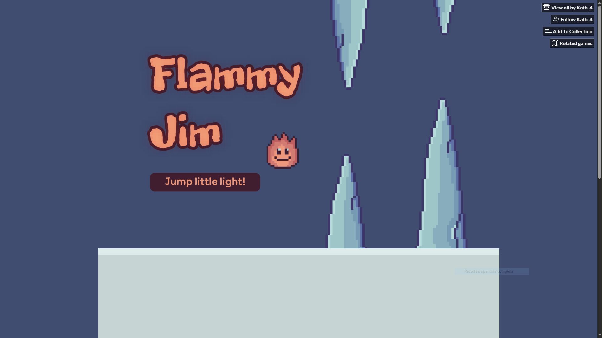
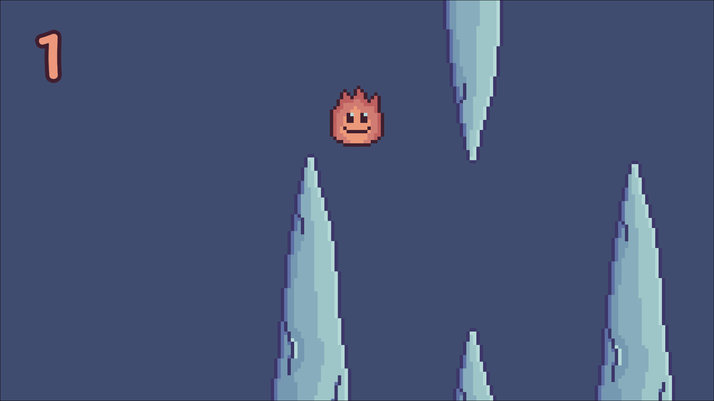
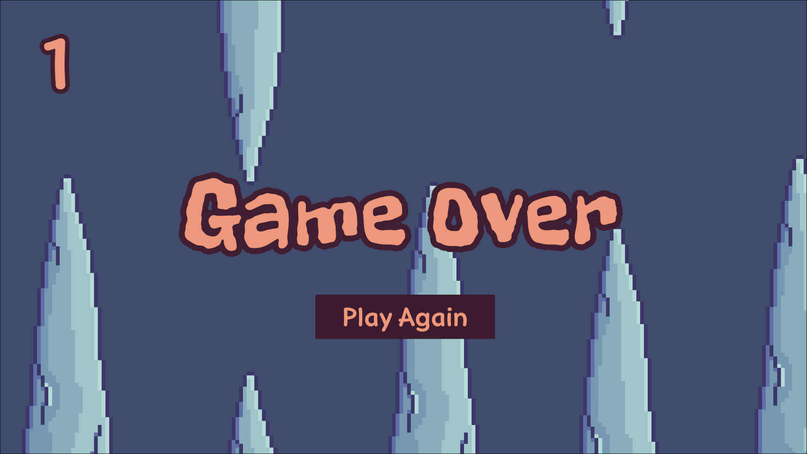

Flammy Jim
Un endless flyer propio construido a partir de un tutorial, con una flama como protagonista, estalactitas de hielo como obstáculos, y una mecánica diferenciadora todavía por llegar.
Descripción
Flammy Jim nació como ejercicio práctico a partir de The Unity Tutorial For Complete Beginners, para aterrizar en un proyecto pequeño el ciclo completo de diseño, arte y programación. Sobre esa base técnica, lo reimaginé visualmente: en vez de un pájaro, una pequeña flama; en vez de tubos, estalactitas de hielo.
Ya está publicado en itch.io, pero no es su versión final — sigue recibiendo actualizaciones. Mi objetivo pendiente es incorporar una mecánica que lo diferencie de un Flappy Bird estándar; todavía no está implementada, así que por ahora es la siguiente meta del proyecto, no una funcionalidad terminada.
Proceso de desarrollo
- Base técnica guiadaSeguí un tutorial de introducción a Unity para tener una base sólida de mecánicas de vuelo y colisiones, y enfocar mi energía en la ejecución más que en resolver un sistema desde cero.
- Reskin visual completoRediseñé personaje, obstáculos y paleta: el pájaro se convirtió en una pequeña flama, y los tubos en estalactitas de hielo, alejándome por completo de la referencia original.
- Publicar y seguir iterandoSubí el juego a itch.io como primera versión jugable, sabiendo que recibiría actualizaciones — no lo trato como un proyecto cerrado.
- Meta pendienteTengo planeada una mecánica que rompa la monotonía del loop original de "esquivar y esquivar" y diferencie el juego de un Flappy Bird estándar. Todavía no la he implementado.
Herramientas
Habilidades demostradas
Galería



Enlaces
El repositorio de este proyecto es privado por ahora.